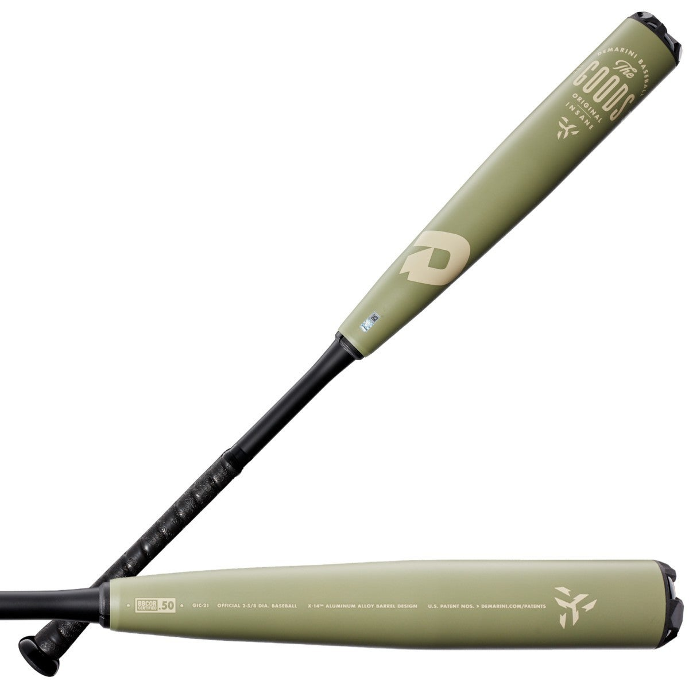
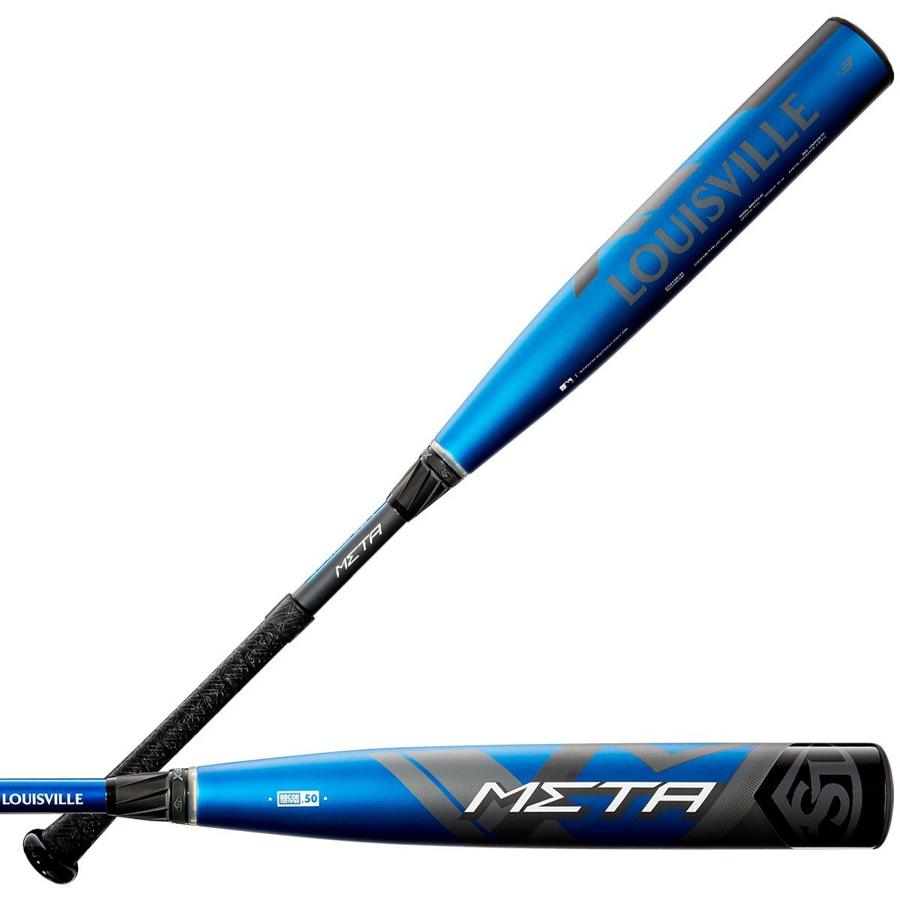
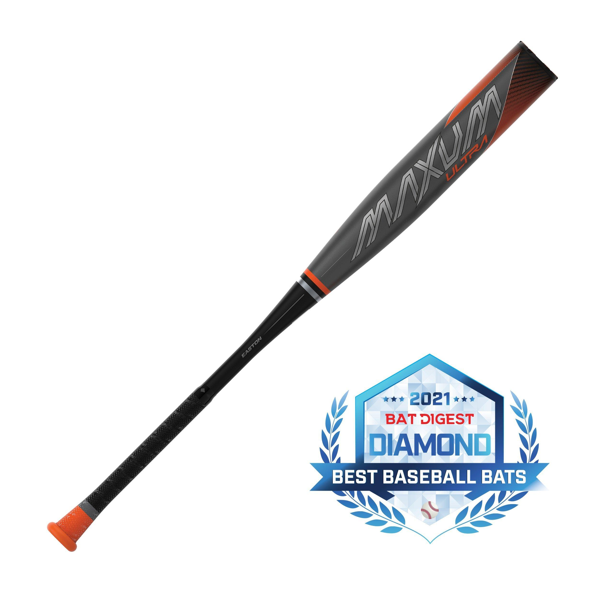
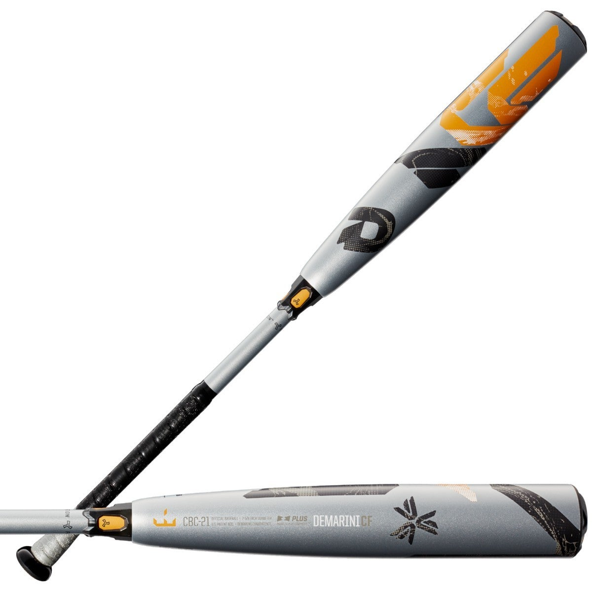
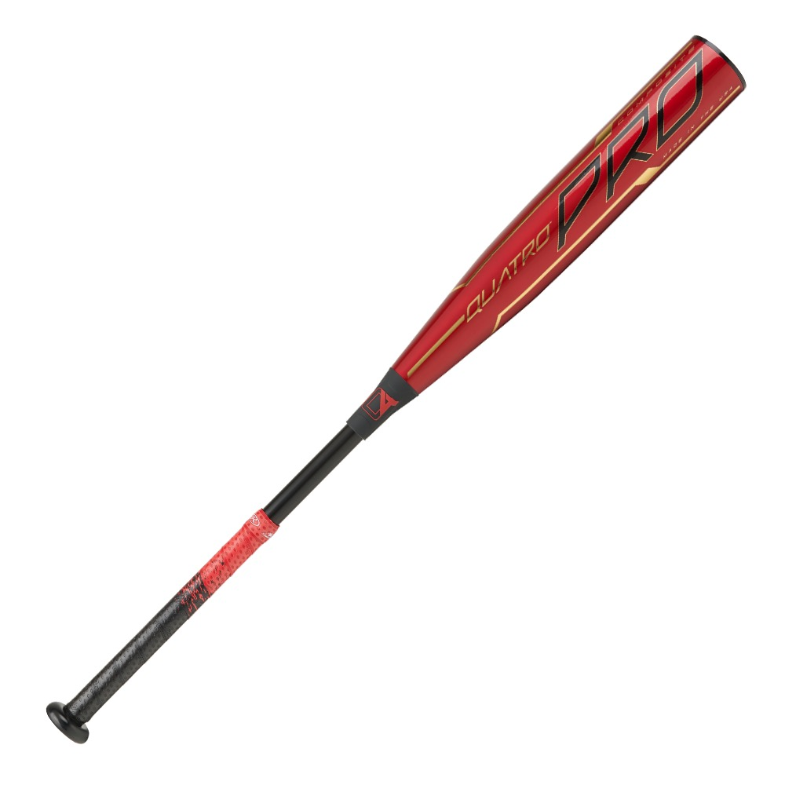
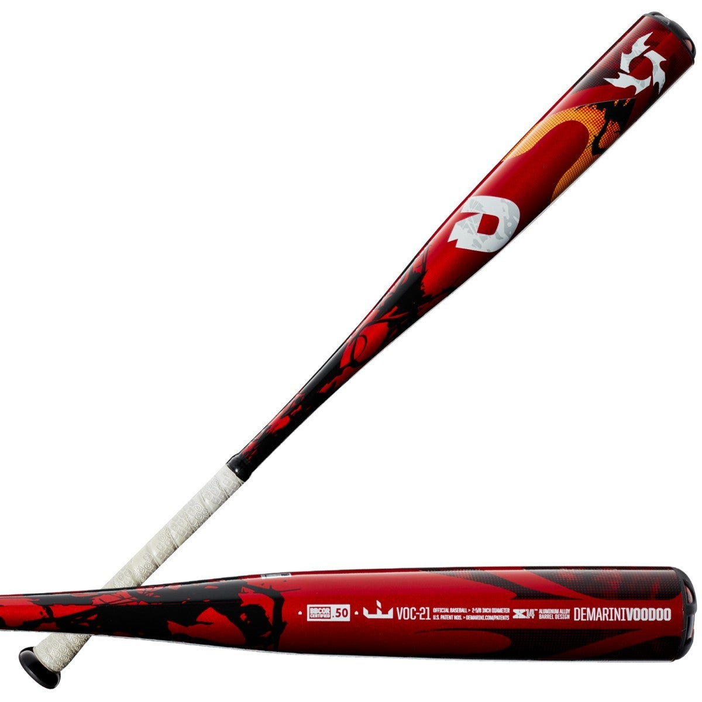
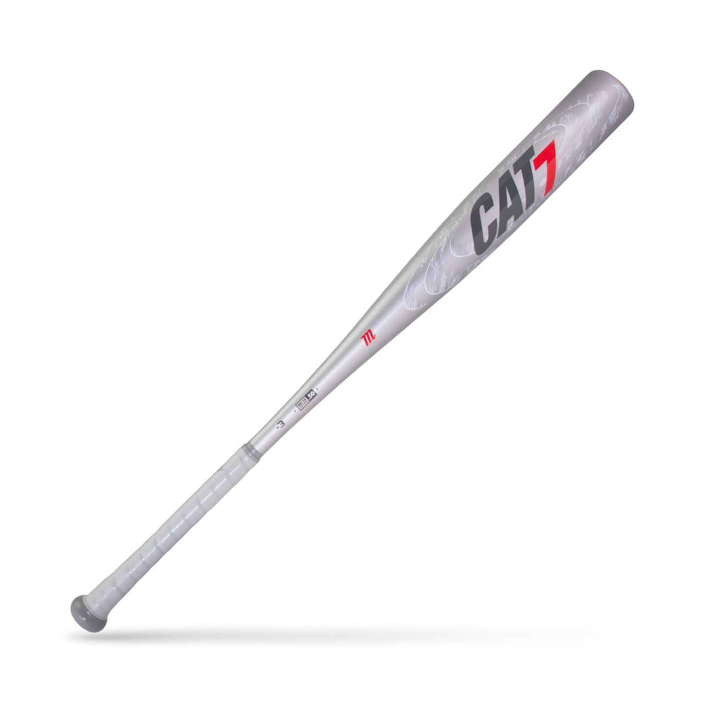
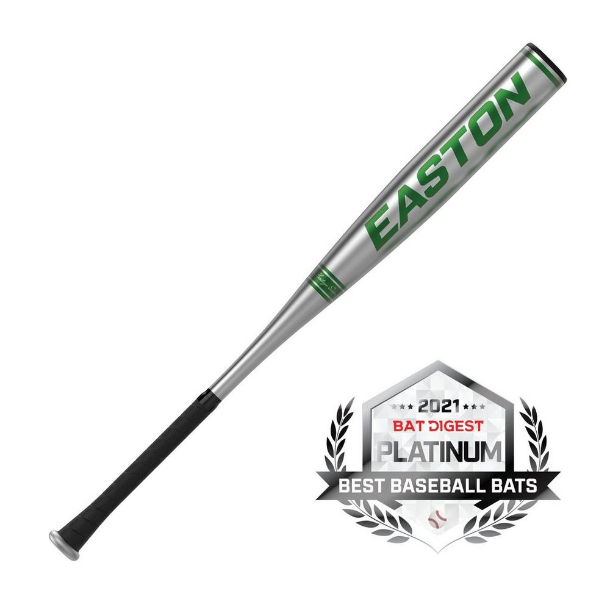
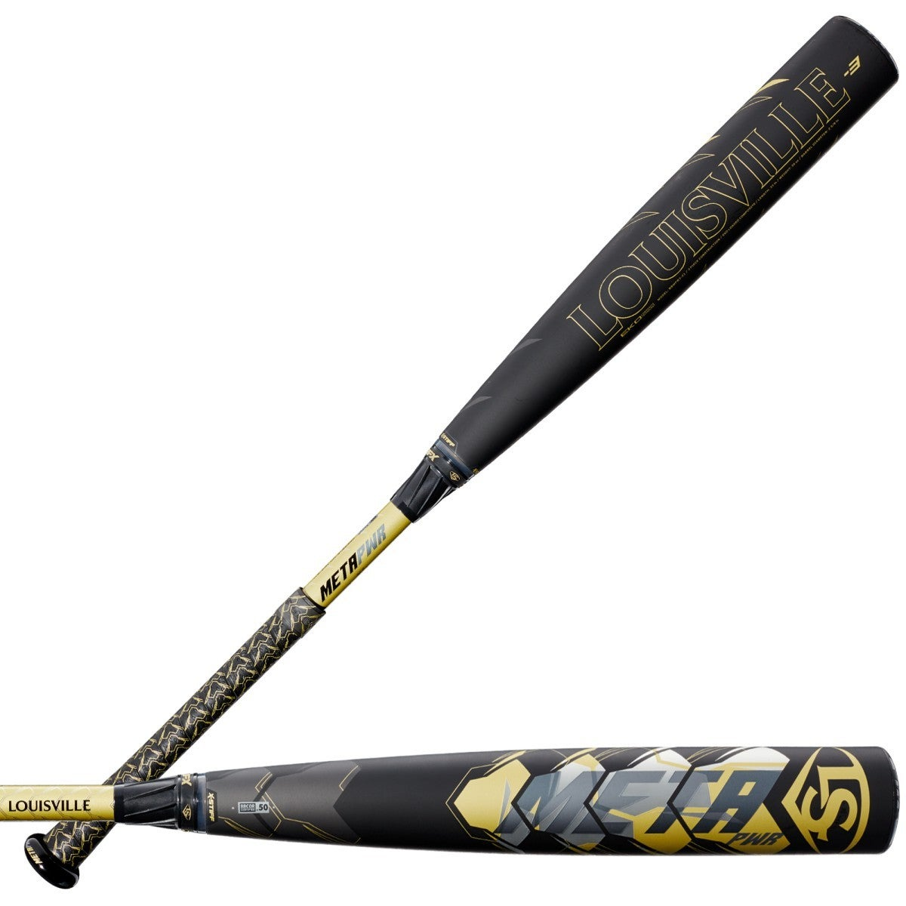
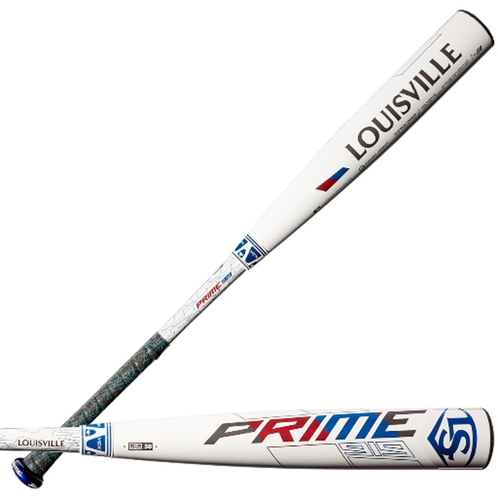

| Rank | Bat | Reason | Rating | Price | Image |
|---|---|---|---|---|---|
| 1 | 2021 DeMarini The Goods | This end-loaded bat provides unmatched durability and power! While it is not a great bat for a balanced swing, this bat WILL boost your slugging percentage! This bat comes at a great price for its power! | 9.7/10 | $399.95 |  |
| 2 | 2020 Meta | This two-piece BBCOR bat is top tier in just about every category. It has suprising power for its extremely balanced weight, as well as a sturdy two-piece build. This is just about the most well rounded bat on the market. The only downside to this bat is its price, which is just a bit too high for its performance. | 9.5/10 | $499.95 |  |
| 3 | 2021 Maxum Ultra | This one-piece composite bat has a huge sweet spot! This bat will get you HITS! It's huge barrel combined with a slightly heaavier barrel provides great power with a decently balanced swing. This bat is sure to provide power and swing speed, for a good price. | 9/10 | $399.95 |  |
| 4 | 2021 CF | This is the original and premier two-piece composite bat in today's game. Although the bat is said to be balanced, I find that it is slightly end loaded. It still provides great bat speed and a suprising amount of power for its build. Barrel control? Check. New technology also reduces the vibration and generates more energy into the barrel. The biggest downfall of this bat is it's price, which is pretty high for its performance. Overall, however, this is a great bat if you have the money to spend. | 8.2/10 | $449.95 |  |
| 5 | Rawlings 2020 Quatro Pro | This dynamic bat provides an enormous barrel while keeping the weight evenly distributed. This bat is extremely well balanced and provides a clean and easy swing. While the weight distribution takes away from some of the possible power, the accelerated swing speed makes up for amuch of that loss. | 8.0/10 | $374.95 |  |
| 6 | 2021 Voodoo One | This balanced bat is similar to the Quatro, with well distributed weight and a sweet swing. It only lacks that large barrel and loses power because of it. It is easy to make good contact with this bat, but that does not mean the ball will go very far. This bat also comes at a great price. | 7.6/10 | $299.95 |  |
| 7 | CAT7 | My personal favorite version of the CAT, this bat is one of the smoothest swings on the market. The weight distribution is perfectly balanced. While most CAT bats do not provide much power, I find that this model has a suprising amount of pop. Not to mention it's great price! | 7.2/10 | $219.99 |  |
| 8 | B5 Pro Big Barrel | This bat is a true hidden gem. While it may not be advertised and talked about as much as other bats like the Meta and Goods, this hunk of metal packs a punch. With a huge sweet spot and flexible barrel. The bat also provides a reduction in handle vibration and stiffness. This would certainly be ranked higher on this list if it were not for its recent release and uncertainty. | 7.0/10 | $349.95 |  |
| 9 | 2021 Meta PWR | This bat in the Meta family is built for strong hitters. This end loaded bat provides great power with sweet spot contact. It has a suprisingly smooth swing for its power and weight distribution, but its price is far to high. This is a great bat, but only if you can afford it. | 6.6/10 | $499.95 |  |
| 10 | Lousiville Slugger 2019 Prime 919 | This is the oldest model listed on this ranking, but don't let that fool you. This smooth swinging bat combines speed and power for great results. A pretty large barrel and sweet spot combine to create optimal range of power. The only real downside is the ranging price, as this bat is now discontinued and can only be found on reseller websites such as amazon. | 6.5/10 | $429.95 |  |